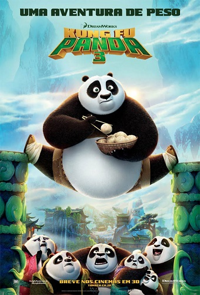

Kung Fu Panda (2008)

Sinopse
Po é um urso panda desajeitado, que trabalha no restaurante de macarrão de sua família. Um dia ele é surpreendido ao saber que foi escolhido para cumprir uma antiga profecia, o que faz com que treine ao lado de seus ídolos no kung fu: os mestres Shifu, Garça, Tigresa, Louva-deus, Macaco e Víbora. Quando o traiçoeiro leopardo da neve Tai Lung retorna, cabe a Po defender o Vale da Paz.
Personagens
- Po: um panda-gigante enérgico, propenso a acidentes e obstinado fã de Kung Fu.
- Mestre Shifu: um velho e severo panda-vermelho, mestre de kung fu dos Cinco Furiosos.
- Mestre Tigresa: uma tigresa-do-sul-da-china mal-humorada e líder dos Cinco Furiosos.
- Mestre Víbora: uma doce e de boa índole víbora verde.
- Mestre Macado: um descontraído macaco-dourado.
- Mestre Louva-a-Deus: um ágil louva-a-deus chinês.
- Mestre Garça: um grou-da-manchúria pragmático e sarcástico.
- Tai Lung: um leopardo-das-neves arrogante e agressivo que anteriormente era o filho adotivo e aluno de Shifu.
- Mestre Oogway: um sábio ancião tartaruga-das-galápagos, mentor do Mestre Shifu.
- Sr. Ping: um ganso chinês e o pai adotivo de Po, que administra um restaurante de macarrão.
- Zeng: um tímido ganso chinês e o mensageiro de Shifu.
- Comandante Vachir: um rinoceronte-de-java arrogante e intimidador que é o diretor da prisão Chorh-Gom, onde Tai Lung está preso.
Kung Fu Panda 2 (2011)

Sinopse
Po vive o sonho de ser o dragão guerreiro, protegendo o Vale da Paz ao lado dos mestres Shifu, Tigresa, Macaco, Víbora, Louva-deus e Garça. Sua vida pacata chega ao fim quando surge um novo inimigo, o lorde Chen, que possui uma arma secreta capaz de permitir a conquista da China e provocar o fim do kung fu. Para impedi-lo, Po e os Cinco Furiosos precisam cruzar o país e derrotá-lo.
Personagens
- Po: Panda-Gigante
- Fala Macia: Cabra
- General Lobo: Lobo
- Lorde Chen: Pavão
- Mestre Shifu: Panda-vermelho
- Mestre Tigresa: Tigre-do-sul-da-china
- Mestre Garça: Grou-da-manchúria
- Mestre Louvra-a-Deus: Louva-a-Deus
- Mestre Macaco: Macaco-dourado
- Mestre Víbora: Víbora
- Sr. Ping: Ganso
- Mestre Boi Toró: Búfalo-asiático
- Mestre Crocodilo: Crocodilo-da-água-salgada
- Mestre Rino Trovão: Rinoceronte-indiano
- Li: Panda-gigante
Kung Fu Panda 3 (2016)
Sinopse
Desta vez, Mestre Shifu tem como principal ensinamento fazer com que Po aprenda a técnica de dominação do Chi, uma espécie de “energia vital”. Porém, o atrapalhado panda acaba se desconcentrando com a chegada do pai de sangue, o panda Li, que o carrega para a vila secreta dos pandas – aguçando o ciúme do Sr Ping, o “pai” ganso de Po. Em paralelo, o poderoso touro Kai, O Coletor, um centenário inimigo do Mestre Oogway, reúne forças para voltar para o mundo dos vivos e tomar o que ele acha que é dele por direito. Caberá a Po e seus amigos impedir o maléfico plano do vilão.
Personagens
- Po (Xiao Po) / Lotus: Panda-gigante
- Mestre Shifu: Panda-vermelho
- Mestre Tigresa: Tigresa-do-sul-da-china
- Mestre Víbora: Víbora verde.
- Mestre Macado: Macaco-dourado.
- Mestre Louva-a-Deus: Louva-a-deus
- Mestre Garça: grou-da-manchúria
- Mestre Oogway: Tartaruga-das-galápagos
- Sr. Ping: Ganso chinês
- Li Shan / Lee: Panda gigante
- Mei Mei: Panda gigante
- Kai, o Coletor: Iaque
- Bao: Panda gigante